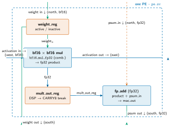
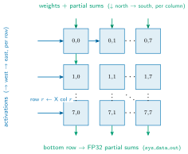

Lab 2: The Matrix Unit¶
ECE 4950/6950 AI Hardware, Fall 2026
School of Electrical and Computer Engineering, Cornell University
Lab 2: The Matrix Unit
Due: TBD, Fall 2026
Late submission: 4% penalty per day; cannot be late by more than 6 days.
Unverified against the RTL and ISA
This page was ported from a retired LaTeX handout without a technical review. The claims listed below have not been checked against the current RTL and ISA; they are the work list for the review tracked in issue #385. The rest of the page (motivation, exercises, tooling and submission steps) is pedagogy and needs no such check. The authoritative sources are the ISA Reference and the ABI Register Map.
Known wrong, not merely unverified. The matmul.tile.bf16 mnemonic and
its three-operand form belong to a namespace that matches no generation of
the ISA. And the activation tile is not streamed from the scratchpad:
the MXU sources X from the VREG 2D register file and stages it in its own
x_matrix buffer (npu/src/compute_tile/mxu.sv). The Section "The
instruction the MXU runs" and Part 4 below still describe the scratchpad
operand model, so they contradict this note and must be rewritten, not merely
caveated.
Unverified claims on this page.
- Array geometry: that the grid is 8x8 cells in the standard build and is
parameterized
DIMbyDIM. - PE dataflow: weight-stationary cells; activations entering the left edge and moving right; partial sums moving down each column; weights streamed down the columns and then held.
- PE port names:
pe_input_in/pe_input_out,pe_psum_in/pe_psum_out,pe_weight_in/pe_weight_out,pe_valid_out,pe_switch_out. - Latency arithmetic: that the multiply and the add each cost
PE_LATENCYcycles plus one extra register stage; that the bottom-row partial sum is validPE_LAT = 2*PE_LATENCY + 1cycles behind; thatpe_valid_outruns one cycle ahead ofpe_psum_out; and thatLATENCYlives in thepe.svheader whilePE_LATENCYlives innpu_config_pkg.sv. - Scratchpad geometry and arbitration: that
banked_sram.svinstantiates eight 32-bit banks striped into one 256-bit row; theN_PORTSrequest ports and thecomp_enenable bus; the quotedbank_req[b] = comp_en;andcomp_conflict_bank_o[b] = ($countones(comp_en) > 1);lines; the fixed-prioritybank_winner; the one-cycle request-to-data alignment; theN_PORTS=1default; and the assertion that there is no spare third port. - Capture FSM:
sys_valid_out_d,sys_data_out[col],row_ptr[col], theS_STORE_REQstate, theload_idxwalk from0toN-1, andbase_addr_out. - Numeric format and FPU blocks: BF16 operands with an FP32 accumulator;
bf16_mul_fp32.sv,fp16_mul_fp32.sv,fp_add.sv; and the BF16-vs-FP16 exponent and mantissa comparison. - Figure-borne claims:
mxu-peandmxu-arrayare frozen legacy SVGs with no TikZ source, so they cannot be re-rendered from a corrected source. The weight-stationary dataflow above is asserted by the drawings as well as by the caption and by Part 2, so a figure/RTL mismatch would need fixing in three places and cannot be fixed by re-rendering. - Not yet real: the
make board-test BOARD=zcu102flow the Materials section and Part 4 describe is aspirational; the page's own source comment says so.
Introduction¶
In Lab 1 the vector unit computed a matrix product one row at a time. To multiply a matrix by a vector, it ran a separate dot-product reduction for each row of the matrix, one after the next. Each reduction was quick, but they ran in sequence, so the time grew with the number of rows. For the large matrices a neural network needs, that is the wrong shape of hardware.
This lab builds the part of the accelerator that does matrix multiplication well: the Matrix Unit (MXU). The MXU is a systolic array, a two-dimensional grid of small multiply-accumulate cells. Instead of computing one output at a time, it streams a whole tile of one matrix and a whole tile of the other through the grid, and every cell multiplies and accumulates on every cycle. The same operand, once it enters the grid, is reused by many cells as it moves across, so one read from memory feeds many multipliers. That reuse, computing the whole product in one structure rather than one row at a time, is the reason a matrix unit is faster than a vector unit at this work (cf. NVIDIA Tensor Cores and Google's TPU systolic arrays).
You build the MXU in four parts, from the bottom up. First a single
multiply-accumulate cell, the processing element. Then the grid that wires many
of those cells into the array. Then the schedule that lets the matrix unit and
the vector unit run at the same time, sharing the scratchpad. Finally you capture
the array's results, store them back, and run the design on the FPGA board. The
MXU you finish here is the same matrix unit used in the later work; nothing is a
simplified stand-in. The course introduction document (labs_introduction.pdf)
describes the accelerator, its programming model, the setup on the
ecelinux servers, and how submission and grading work. Read it first; this
handout assumes it.
Lab 2 runs on the FPGA board, where the same hardware processes the target model at full scale. The bitstream build and the host code that drives the board are provided; you write the hardware.
By the end of the lab you will understand how a systolic array computes a matrix product and why reusing each operand across many cells makes it efficient, how two compute engines can share one scratchpad and run concurrently when their memory accesses do not collide, why operands are stored in a narrow floating-point format while the running sum is kept in a wide one, and what it takes to bring a design up on a real board.
Prerequisites. You should be comfortable with the material of Lab 1: the
accelerator's programming model, the explicitly managed scratchpad, and the
cocotb and Verilator flow. You should be comfortable writing SystemVerilog
generate blocks, since the array is built by instantiating a grid of
identical cells. You should remember from Lab 1 that a pipelined result is valid
a fixed number of cycles after its inputs are stable; that idea returns here in
the timing of the array's outputs.
Materials¶
Your repository contains a skeleton that already compiles. The systolic fabric,
the scratchpad arbiter, and the concurrency scaffold are intricate, so more of
them is given to you already built than in Lab 1; each part of the lab is a small
region inside otherwise complete code, marked with a // TODO(lab2) comment
that you fill in.
The pieces are:
- The design files you edit, under
npu/src/compute_tile/. Part 1 ispe.sv, one processing element. Part 2 issystolic.sv, the grid that wires the cells into the array. Part 3 touches the banked scratchpadnpu/src/common/banked_sram.svand an assembly kernel you write. Part 4 is the result-capture and store-back logic inmxu.sv, the module that wraps the array and drives it. Each file's header comment states what it does and how its sub-modules connect. - The provided arithmetic modules, which you do not edit, under
npu/src/compute_tile/fpu/. The cell multiplies two BF16 operands and produces an FP32 product; the multiplier the build pins isbf16_mul_fp32.sv(fp16_mul_fp32.svis also provided and used for the precision comparison in the report). The accumulator add isfp_add.sv. These are written and tested. You wire them into the cell; you do not implement floating-point arithmetic yourself. - The public tests, under
dv/compute_tile/, written with cocotb. These define and constitute your grade. Part 1 is graded bytest_pe.py; Part 2 bytest_systolic_array.pyand the parametric sweeptest_systolic_param.py, which checks the same design at several array sizes; Part 3 bytest_coissue.py, which drives an overlapped two-engine run and checks the bank-conflict detection; Part 4 bytest_mxu.py, which drives a fullmatmul.tile.bf16and checks the captured result. Each test drives your design and compares its output against a numpy reference within a stated tolerance. - The
Makefile.make testbuilds the design with Verilator and runs the public tests. The board target,make board-test BOARD=zcu102, flashes the provided bitstream containing your hardware and runs the on-board check.
make help
lists the targets.
Everything else in the repository is provided and complete; you edit only the
// TODO(lab2) regions named above.
After cloning and loading the environment as described in the introduction document, run the simulation tests once to confirm the skeleton builds:
The build succeeds and the tests fail, because the TODO regions are still
empty. The build stores and transports operands as BF16 (16-bit) and accumulates in
FP32 (32-bit). The autograder runs the same tests under the same pinned tool
versions and the same configuration, so the result you see locally is the result
you are graded on.
Goal¶
You build one matrix engine in four parts. Each part reuses what the previous one built: a cell becomes a grid of cells, the grid runs alongside the vector unit, and the whole thing captures its results and runs on the board. Fig. 1 shows a single processing element and the grid you assemble from it.


Fig. 1.One PE and the grid you assemble from it. Left: one weight-stationary processing element. It holds a weight, multiplies the activation that passes through it, and adds the product into a partial sum that arrives from above. Right: the grid. Activations enter from the left and move right; partial sums move down each column. Weights are streamed down to load each cell, then held in place while the activations stream. Each operand, once inside, is reused by a whole row or column of cells. You build the cell in Part 1 and wire the grid in Part 2.
Part 1: a processing element¶
The first part builds one cell of the array, the processing element (PE). The array computes its matrix product by giving each cell one weight to hold and streaming activations past it. On each cycle the cell multiplies the activation flowing through it by its held weight, adds that product to a partial sum coming from the cell above, and passes the activation along to the next cell and the new partial sum down to the cell below. This hold-multiply-accumulate pattern, with the weight held in place while activations stream past, is what weight-stationary means.
You complete pe.sv. The work is wiring, not arithmetic. You connect the
provided BF16 multiplier (bf16_mul_fp32.sv) so that it multiplies the
incoming activation by the cell's held weight, and you feed its FP32 product and
the incoming partial sum into the provided fp_add.sv to form the outgoing
partial sum. The cell's input and output ports, the two weight
registers that hold the active and the next weight, and the handshake that loads
a new weight are already in place; the file header lists them.
The idea to take away from Part 1 is the precision choice the cell makes.
The operands, activations and weights, are stored and transported as
BF16 (16-bit), but the partial sum is kept and added in FP32
(32-bit). A BF16 operand takes half the storage and half the memory bandwidth of
an FP32 one, which matters because the operands dominate the traffic into the
array. The running sum, on the other hand, adds up many products and would lose
accuracy if it were rounded after every step, so it is kept in FP32. Storing
narrow and accumulating wide is the standard trade-off: it saves memory and area
on the operands without sacrificing precision across the long reduction. BF16
retains the full exponent range of FP32 (8 exponent bits), which prevents
overflow on large-magnitude operands and activations where FP16 (max about
65504) would saturate to infinity. FP16 spends more bits on the mantissa but only
5 on the exponent, so it overflows where FP32 and BF16 would not. Choosing between BF16 and FP16 is one of the
trade-offs your report addresses. The test, test_pe.py, multiplies a
BF16 pair, adds the FP32 product into a partial sum, and compares the FP32
result against numpy within a tolerance sized to BF16 rounding.
Part 2: the systolic fabric¶
Part 2 wires many processing elements into the array. The grid is 8×8 cells in the standard build, but you wire it parametrically as DIM×DIM so the same code is correct at any size. Activations enter the left edge, one per row, and flow right; weights and partial sums enter the top edge, one per column, and flow down. The weights flow down only to load each column into its cells; during the multiply they are held stationary while the activations stream and the partial sums accumulate down. As an activation moves across a row it is multiplied by every weight in that row, and as a partial sum moves down a column it accumulates the contribution from every cell in that column. By the time a partial sum reaches the bottom of its column it is one finished element of the output matrix. This is the reuse that makes the array efficient: a single activation read feeds an entire row of cells as it propagates (spatial reuse), and each stationary weight is reused by every activation that streams past it (temporal reuse), instead of each value being read once per multiply as the vector unit would.
You complete systolic.sv. Inside generate loops you instantiate the
DIM×DIM grid of the Part 1 cell and wire the edges: the
left-edge inputs that feed activations into each row, the top-edge inputs that
feed weights and zeroed partial sums into each column, and the bottom taps that
read finished results out of the last row. The cell instance and the parametric
DIM are provided; you write the edge wiring and the neighbor-to-neighbor
connections using the directional ports from Part 1. Each cell forwards its
activation east on pe_input_out (with pe_valid_out and
pe_switch_out alongside it), and drives its partial sum south on
pe_psum_out and its weight south on pe_weight_out. So cell
[i][j] feeds cell [i][j+1] to its east, connecting pe_input_out
into the next cell's pe_input_in (and likewise for valid and switch),
while cell [i][j] feeds cell [i+1][j] below it, connecting
pe_psum_out and pe_weight_out into that cell's
pe_psum_in and pe_weight_in. Because the design is parametric,
the same wiring must be correct at several array sizes. The test, test_systolic_array.py, multiplies two
matrices through the array and compares against numpy; the sweep
test_systolic_param.py runs the same check at several values of
DIM, which catches edge-wiring mistakes that only appear when the grid is
larger than the smallest case.
Part 3: running alongside the vector unit¶
The matrix unit and the vector unit both read from the same scratchpad, and a real kernel uses both. Part 3 is about making them run at the same time. Inside a single matrix-multiply kernel there is overlap to exploit: while the matrix unit streams and drains one tile through the array, not occupying every scratchpad bank every cycle, the vector unit can be post-processing the previous tile (for example, applying a bias and an activation to the results that just came out). Running the two engines together this way, instead of strictly one after the other, shortens the kernel. The overlap is identifiable when the kernel is written, because the schedule knows which tiles each engine touches and when.
This part has two pieces. The first is the schedule itself, which you write as a short kernel in NPU assembly. You arrange the instructions so the vector unit works on tile N-1 while the matrix unit computes tile N, overlapping their work where it is safe to do so. A starter kernel with the overlap windows identified is provided, so you are filling in a planned schedule rather than inventing one from a blank page.
The second piece is the hardware that lets
the shared scratchpad serve both engines in the same cycle. The scratchpad is
split into independent banks (banked_sram.sv instantiates
eight 32-bit banks striped into one 256-bit row), and the compute side
exposes N_PORTS request ports, one per engine, through the
N_PORTS-wide enable bus comp_en (bit p is high when port p
asks for the scratchpad this cycle). For each bank b the arbiter needs two
things. The per-bank request is the set of enabled ports addressing that bank,
which you write as bank_req[b] = comp_en; (each port presents a full-row
address, so an enabled port requests every bank). The conflict flag is raised
when more than one port requests the same bank in the same cycle, which you write
as comp_conflict_bank_o[b] = ($countones(comp_en) > 1); a popcount of
the enable bus greater than one. These two lines are the arbiter's core; the lab
skeleton scoops them out of the shipping npu/src/common/banked_sram.sv and
leaves a // TODO(lab2) region inside the per-bank loop, which you fill back in
with exactly these two assignments.
The surrounding arbiter, the fixed-priority winner selection
(bank_winner), and the bank read/write port logic are provided around it.
When the requests are disjoint both ports proceed; when they collide, the conflict
flag tells the schedule it must not issue both at once.
The full dual-issue machinery (the broadcast read routing and the per-bank
winner selection that let the two engines drive the scratchpad together) is
provided as a worked scaffold; your additions are the small, high-signal pieces
above. The idea to take away is concurrency: two engines can share one
memory and run together when their accesses are arranged not to collide, without
adding a third physical memory port. The belief that decoding a language model is
inherently sequential is about generating tokens one after another, not about the
work inside a single kernel, where this overlap is real. Watch the one-cycle
alignment between a request and the data the bank returns; that timing is built
into the scaffold for you to align to, not to re-derive. This part is graded by test_coissue.py, which
drives an overlapped run of the two engines and checks the bank conflict
detection, and the default single-engine path (N_PORTS=1, where
the lone port always wins and never conflicts) must stay bit-for-bit unchanged.
Part 4: capturing results and running on the board¶
Part 4 takes the finished products out of the array, stores them back, and runs
the whole design on the FPGA. You work in mxu.sv, the module that wraps the
array, feeds it operands from the scratchpad, and writes its results back. A
result element is valid a fixed number of cycles after its inputs settle, the same
pipeline-latency idea from Lab 1: inside each cell the multiply and the add each
cost PE_LATENCY cycles plus one extra register stage, so the bottom-row
partial sum is valid PE_LAT = 2*PE_LATENCY + 1 cycles behind its driving
inputs; the per-cell latency parameter LATENCY is in the pe.sv
header (PE_LATENCY is defined in npu_config_pkg.sv). One more wrinkle: a cell's pe_valid_out runs one cycle ahead of
its pe_psum_out, so capturing on the raw valid would sample stale data.
You complete the delayed-valid capture, registering sys_valid_out by one
cycle into sys_valid_out_d so the valid you act on lines up with settled
data. Each cycle that sys_valid_out_d[col] is high and that column has
not yet filled, you write sys_data_out[col] into the output tile and
advance row_ptr[col] by one; row_ptr[col] therefore counts how
many of the N results for column col have been captured. Capture is
complete, and the FSM advances toward the store request (S_STORE_REQ),
once row_ptr[col] == N for every column, that is, once all N rows
of every column have been collected. S_STORE_REQ then walks
load_idx from 0 to N-1, writing one captured row per memory
request back to base_addr_out. The array, the operand-fetch sequence, and
the store-port shell are provided.
With the capture working, you run the design on the board. The provided bitstream
contains your hardware; make board-test BOARD=zcu102 flashes it and runs a
matrix-multiply check at the full model scale. Getting the array correct in
simulation first matters, because debugging on the board is much slower than in
the simulator. This part is graded by test_mxu.py in simulation, which
checks that a full matmul.tile.bf16 is captured correctly, and by the
on-board check on the ZCU102.
The instruction the MXU runs¶
The accelerator runs a kernel, a short sequence of instructions that the hardware
fetches, decodes, and executes (the introduction document describes this
programming model). The matrix unit's instruction is matmul.tile.bf16. It
names three scratchpad locations and a few flags:
It reads operand tile spm_a and operand tile spm_b from the
scratchpad (stored as BF16), multiplies them through the array, and writes the
resulting tile into accumulator acc_dst, computing
acc_dst = (accumulate ? acc_dst : 0) + A × B.
The operands are BF16 (16-bit) and the accumulator is FP32 (32-bit), matching
the precision choice of Part 1. The flags change what it does: transB
multiplies by BT instead of B (the same hardware then serves the
several matrix products a transformer needs, some of which want a transposed
operand), and accumulate adds the result into the existing contents of
acc_dst rather than overwriting it. The instruction does not name
individual cells or cycles; it names the operand tiles and the destination, and
the array's internal control walks the tile through the grid.
The accumulate flag is what lets a product wider than one tile be built up
in pieces. A full matrix product C = A × B with a large shared dimension
K is split into K-sized tiles: the first tile overwrites the accumulator and
each later tile adds into it. A short kernel for a two-tile K reads:
matmul.tile.bf16 acc_dst=8, spm_a=4, spm_b=0
matmul.tile.bf16 acc_dst=8, spm_a=5, spm_b=1, accumulate
flush
The first matmul.tile.bf16 multiplies the first K-tile of A
(scratchpad row 4) by the first K-tile of B (row 0) and writes the partial
product into accumulator 8. The second multiplies the next K-tiles
(rows 5 and 1) and, with accumulate set, adds its product into
accumulator 8, completing the sum over K. flush ends the kernel. This running
accumulation over K-tiles is the basic pattern of a tiled matrix multiply on
the array.
The operand tiles are already in the scratchpad (placed by the testbench, as in
Lab 1) before the kernel runs. Building the data-movement path that fills the
scratchpad, and overlapping movement with computation by double-buffering, is the
subject of Lab 3. Your Part 4 work is the hardware that makes one
matmul.tile.bf16 produce a correct, captured, stored-back result.
Guidelines and Hints¶
Coding and debugging¶
- Each
// TODO(lab2)region sits inside code that is already compiled and correct around it. Do not change the provided arithmetic modules, the module ports, the arbiter scaffold, or the surrounding structure; the autograder depends on them. - Develop one part at a time; each test target maps to one part. Run the
parametric sweep
test_systolic_param.pyearly, because a fabric mistake often passes at the smallest array size and only fails once the grid is larger. - Most fabric and capture bugs are off-by-one latency errors. A result is
valid a fixed number of cycles after the last input, and the
delayed-valid capture must sample exactly that cycle.
make testwrites a waveform you can open to line up the valid signal and the data.
Precision¶
- Accumulate in FP32 even though the operands are BF16. Accumulating in 16 bits loses precision across a long sum and will miss the test tolerance.
- The operands are deliberately narrow (BF16) and the sum deliberately wide (FP32). When you reason about other formats in your report, treat it as a trade-off: BF16 vs FP16 trades exponent range against mantissa precision; an 8-bit operand saves further area and bandwidth at a larger precision cost; a wider running sum costs more registers and area but protects the reduction.
Concurrency¶
- Read the provided dual-issue scaffold and the worked overlap kernel before writing anything. Most of Part 3 is understanding the scaffold; the code you add is small but decisive.
- Two engines may share the scratchpad only when their bank accesses are disjoint in a given cycle. If both request the same bank, that is a conflict your detection logic must flag and your schedule must avoid. There is no spare third port; the design has none on purpose.
- Keep the default single-engine path bit-for-bit unchanged. Confirm that the regression passes both before and after your change.
Running on the board¶
- Get the simulation green before going to the board.
make board-test BOARD=zcu102flashes the provided bitstream with your hardware and runs the matrix-multiply check at full scale; a round-trip there is far slower than a Verilator run. - The scale is a build parameter, not a code change. If a result is right in simulation but wrong on the board, suspect a scale-dependent indexing or capture-timing bug, not the arithmetic.
Deliverables¶
Submit through your course git repository as described in the introduction
document. Include in your repository the design files you edited (pe.sv,
systolic.sv, banked_sram.sv, and the capture logic in
mxu.sv; only the files you changed), the overlap kernel you wrote, and your
report as report.pdf. Do not commit build artifacts, the bitstream, or the
sim_build/ directory.
Report¶
Write about one page, single column, with figures or tables where they help (captions required). Discuss the design trade-offs of the matrix unit you built. Two threads are worth addressing. First, precision: the array stores and transports operands as BF16 and accumulates in FP32. Why keep the accumulator in FP32 rather than BF16? What would change in memory use and area, and in accuracy or numeric range, if the storage format were FP16 instead of BF16, or a narrower 8-bit format such as FP8 E4M3? For each, consider the range vs. mantissa trade-off and where overflow becomes a practical concern in transformer inference. Second, concurrency: in your overlap kernel, where did the matrix unit and the vector unit run at the same time, and roughly how much shorter is the overlapped schedule than running the two engines strictly one after the other? Ground the discussion in what you observed building and testing the design.
Acknowledgement¶
This lab is built on the mininpu, a composable tensor-accelerator hardware template developed for research and adapted here for teaching. The systolic array, the mixed-precision datapath, the bank arbiter, and the FPGA flow are drawn from the same design that runs in the full accelerator.
References¶
- mininpu course introduction and setup,
labs_introduction.pdf. - cocotb documentation, https://docs.cocotb.org/.
- Verilator manual, https://verilator.org/guide/.
- AMD/Xilinx Zynq UltraScale+ MPSoC ZCU102 evaluation board documentation (UG1182) and AXI reference guide (UG1037).